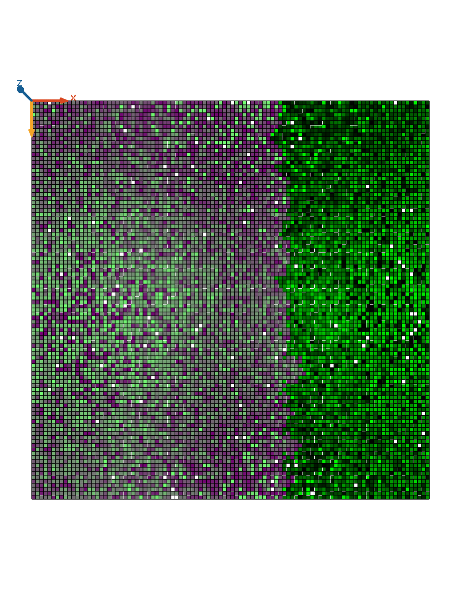
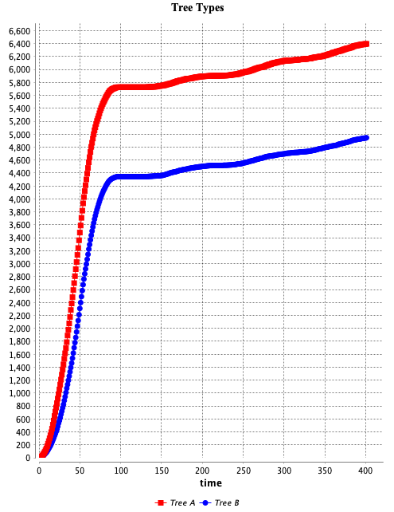

Assignment 5: Dynamic species distribution model
How I extended the Eden growth model
Creating
is_treeAandis_treeBto germinate the seedsSwitch the seedling function
Adding competition between tree A and B
A Summarised ODD Protocol
The purpose of this agent-based model is to examine the spatial and temporal patterns of tree growth and to make a preliminary estimate of tree competitions. Specifically, we are addressing the following question: how does trees grow and distribute in the environment in response to tree (nature) competitions.
The model includes the following entities: trees and land. The state variables and attributes characterising these entities are listed in Table 1. The environment is built on a grid of 100 x 100 tessellated patches. Unlike in the real world, seedlings can grow and spread with the same probability in this virtual space. Because it is a closed environment (rather than a taurus), the trees do not spread beyond the boundaries. There are two types of trees in this model (seedlings). I categorised them treeA and treeB for convenience of reference. Both trees are placed in a grid cell at random, but not in the same cell. Since they are seedlings, they are not allowed to move, which means that once they are rooted to the ground, their growth are dependent on the environment. As for the temporal and spatial resolution, a time step in the model represents a year and the simulation stops at the 400th cycle. There is no particular representation for the spatial resolution.
| Name | Variables |
|---|---|
| is_tree | true / false |
| is_treeA | true / false |
| is_treeB | true / false |
| is_seedling | true / false |
| treeAge | integer (starts with zero) |
| maxAge | Somewhere between 80-120 |
The model’s most important processes, which are repeated at each time step, are the updating of germination, growth, tree distribution, and competition with other tree types. Each tree germinates with a 75% chance within 5 years (i.e. cycles in the GAMA platform), and if successful, spreads using the von Neumann neighbourhood method. If tree types A and B overlap, there is a competition between them, but A will win by 70%.
The most important design concepts of the model are, Initialisation
Results


no_of_treeA: 6396; no_of_treeB: 4945
Interpret the result. Did I expect this result? Yes.